ChatGPTの準備
以下はアカウントを持っていない方向けです。アカウントをお持ちの場合には、X番から、また、すでにAPI Key(Secret Key)をお持ちの場合は次のステップに進んでください。
1. OpenAI ChatGPTへアクセスします。
OpenAI ChatGPT ページ へアクセスし、「Try ChatGPT」ボタンをクリックします。
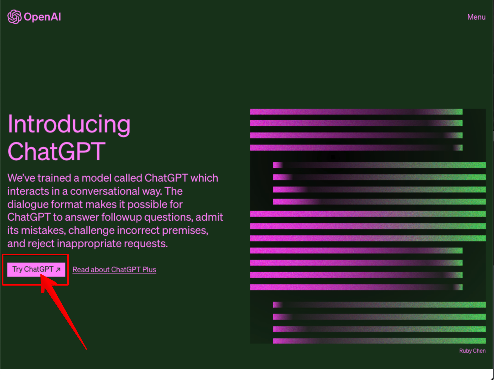
2. Sign upボタンをクリックします。
以下のページが開きますので、「Sign up」ボタンをクリックします。
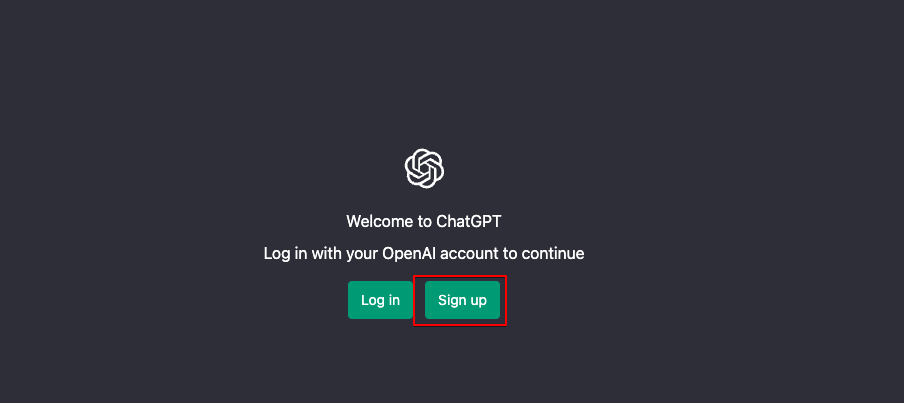
3. アカウント作成方法を選択する。
アカウントの作成は、E-mail、Googleアカウント、Microsoftアカウントで作成できます。今回はGmailを持っていますのでGoogleアカウントで作成します。
「Continue with Google」ボタンをクリックします。
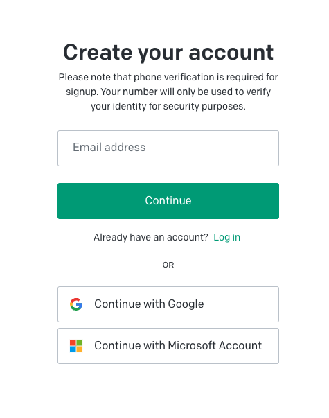
4. Google認証を行います。
Googleアカウントが表示されますので、使用するGoogleアカウントを選択します。
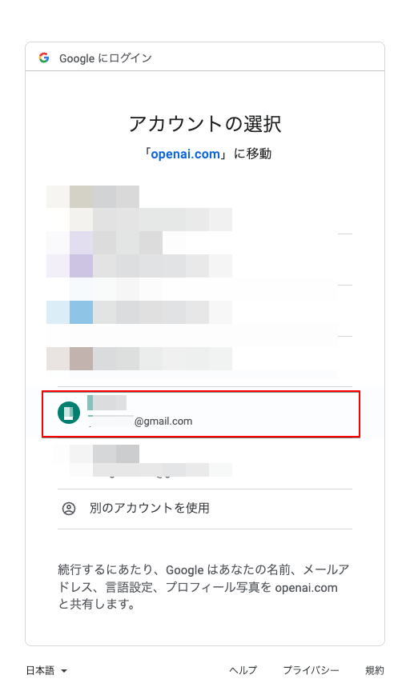
5. 氏名の入力
氏名の入力が求められます。Googleアカウントに氏名を登録してありますので、今回は自動で入っています。
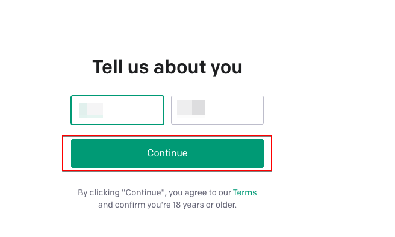
6. SMS認証
Googleアカウントが2段階認証のため、SMSでのメッセージ送信先電話番号を求められます。
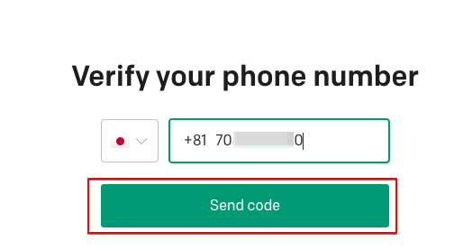
7. コードの入力
SMSで送信されてきたコードを入力します。
8. アカウント作成完了
認証が通り、アカウント作成が完了しました。最初の画面は、無料で使えますが、注意と同意とが表示されます。
- 安全性を向上させるために外部からのフィードバックを求める。
- 間違った情報、誤解させる情報、攻撃的、偏向的なコンテンツを作成する場合があるが、本システムはアドバイスを提供するものではない。
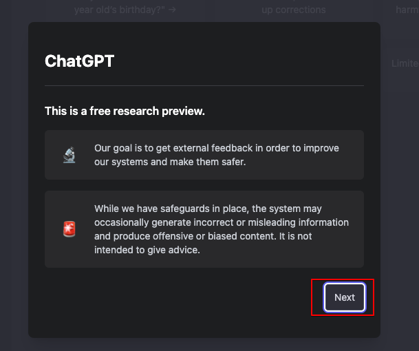
- 会話は当社のAIトレイナーもシステム向上、安全性のためレビューします。
- 会話中のヤバい情報はシェアしないでね。
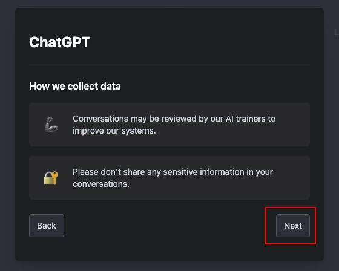
- 会話に最適化したシステムです。特定の反応が良かったり、役に立たない場合は教えてね。
- Discord serverでフィードバック待ってます。
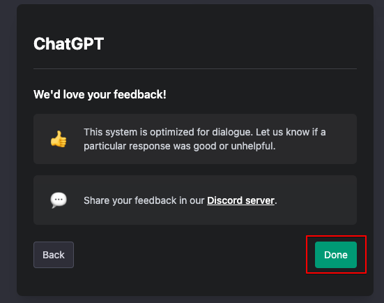
9. API Keyの取得
最後にAPI Keyを取得します。
https://openai.com/へアクセスし、ログインをクリックします。。
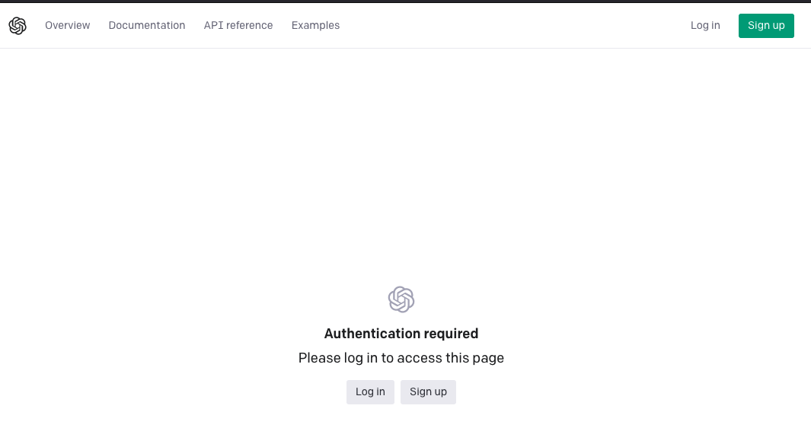
アカウント作製時に使用した方法で、ログインします。
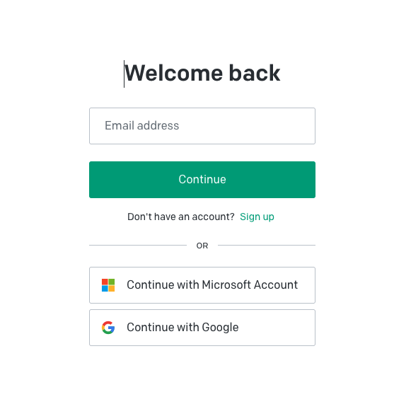
ログインすると、自分のダッシュボードページが開きます。左サイドメニューの「API Keys」を選択し、「Create new secret key」をクリックします。
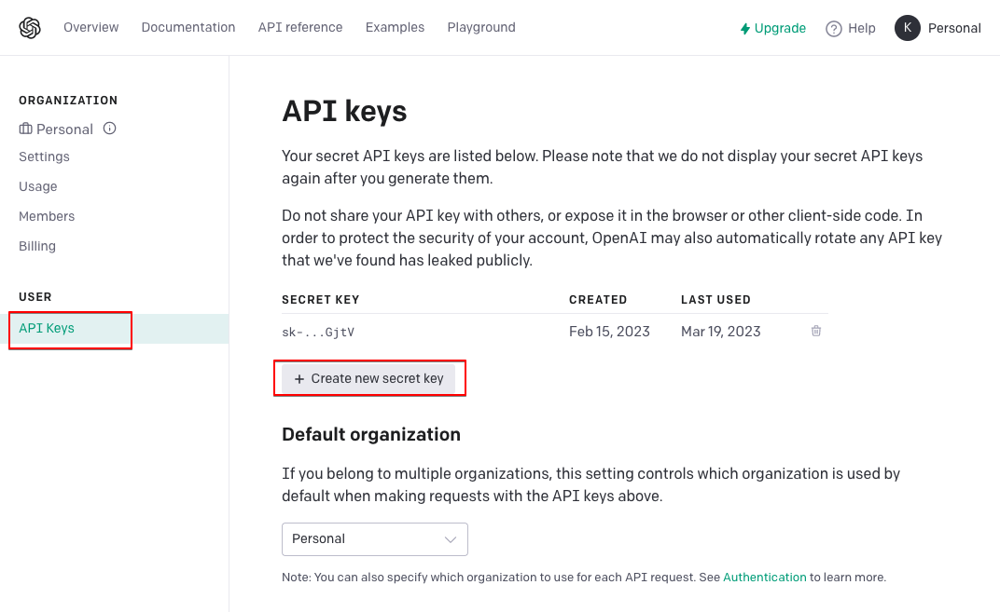
API keyが作成され表示します。右側のコピーボタンをクリックするとキーをコピーできます。「OK」ボタンをクリックして閉じてしまうと、このキーを再度見ることはできません。
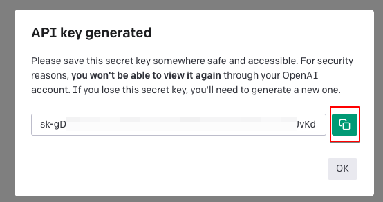
新しく作成した場合に古いキーを使わない場合には、悪用されないためにも削除ボタンで使えないキーは削除しましょう。
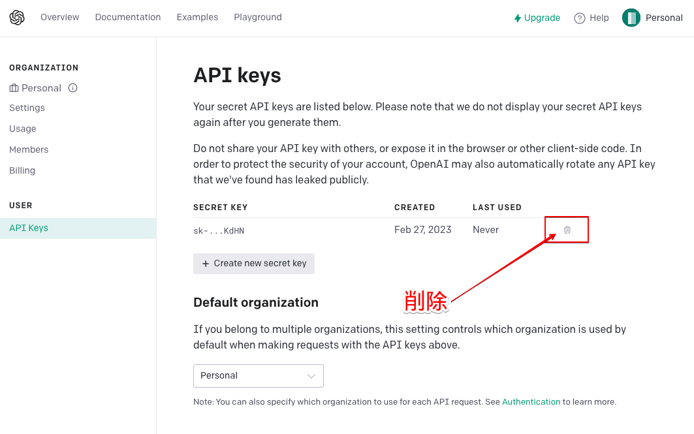
10. 課金について
ChatGPTは、ブラウザで直接https://chat.openai.com/chatにアクセスして使用する場合は、現在（2023年3月18日）は無料です。
しかし、API Keyでアクセスする場合は有料となります。
アカウントを作成すると、3か月有効な＄18のクレジットが付与されます。
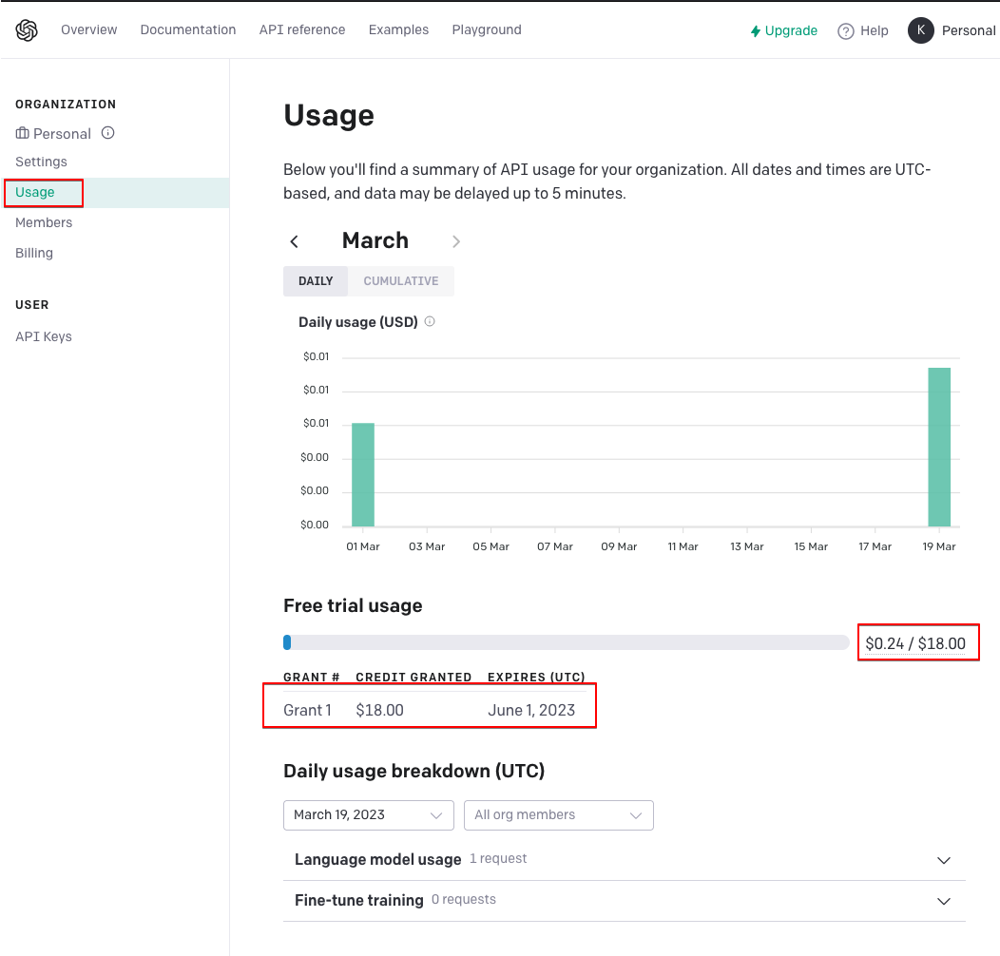
しばらくは、このクレジットを使用するのが良いかと思います。
9. ChatGPT 画面の表示と ChatGPT Plus へアップグレード
Chatのできる画面になります。
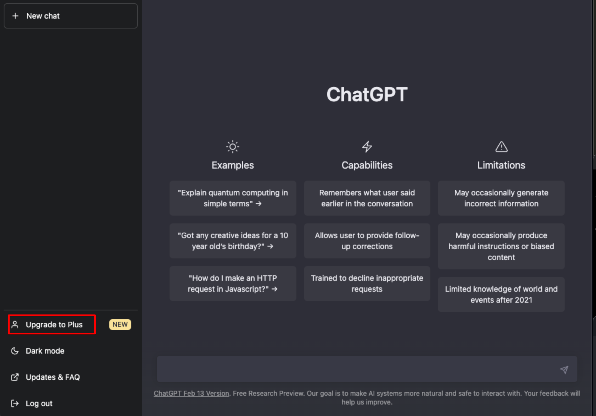
ChatGPTは無料ですとピーク時には繋がりません。また、無料の場合にはChatGPT−4などの最新モデルは使えません。そのため、快適に使いたい、最新機能を使いたい場合は、ChatGPT Plusの月額定額サービスをオススメします。
ただし、最新モデルのAPI Keyは申請し、ウェイティングリストから使用可能になるまで待たないといけません。AI Writerはできる限り最新モデルの搭載を行いますが、私に使用許可が出るまではテストができません。
また、私に使用許可で出て実装しても、使用するあなたに使用許可が出ていない場合にはエラーになります。
ChatGPT Plusの特徴は以下となります。
- いつでも止められる。
- いつでも再開できる。
- ModelのDavinciが使える。
- ピークタイムでも繋がる。
左下の「Upgrade to Plus」をクリックすると、プラン選択画面が表示されます。月額20ドルの「Upgrade plan」をクリックします。
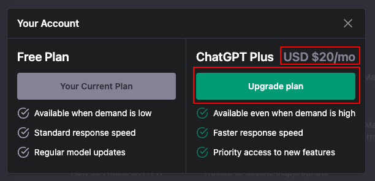
支払い方法の入力画面が開きますので、クレジットカード情報を入力し、「申し込む」ボタンをクリックします。
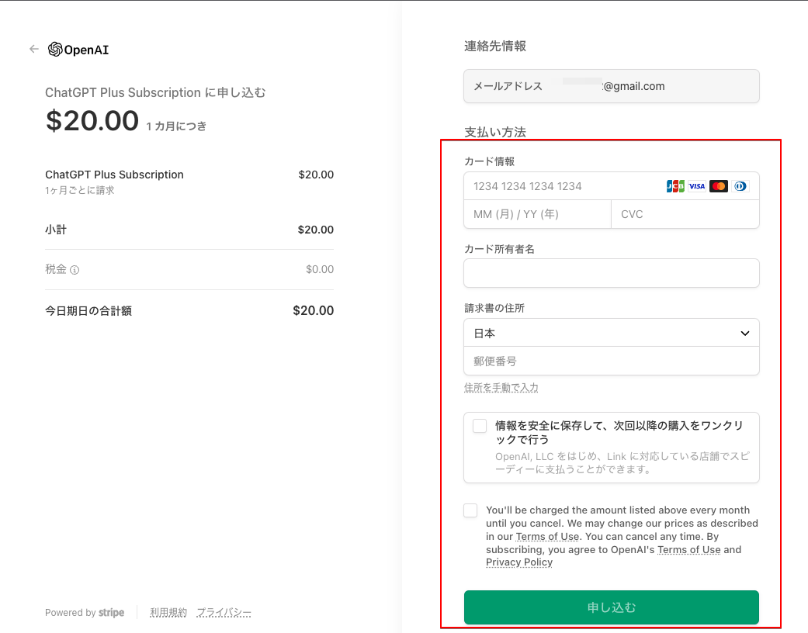